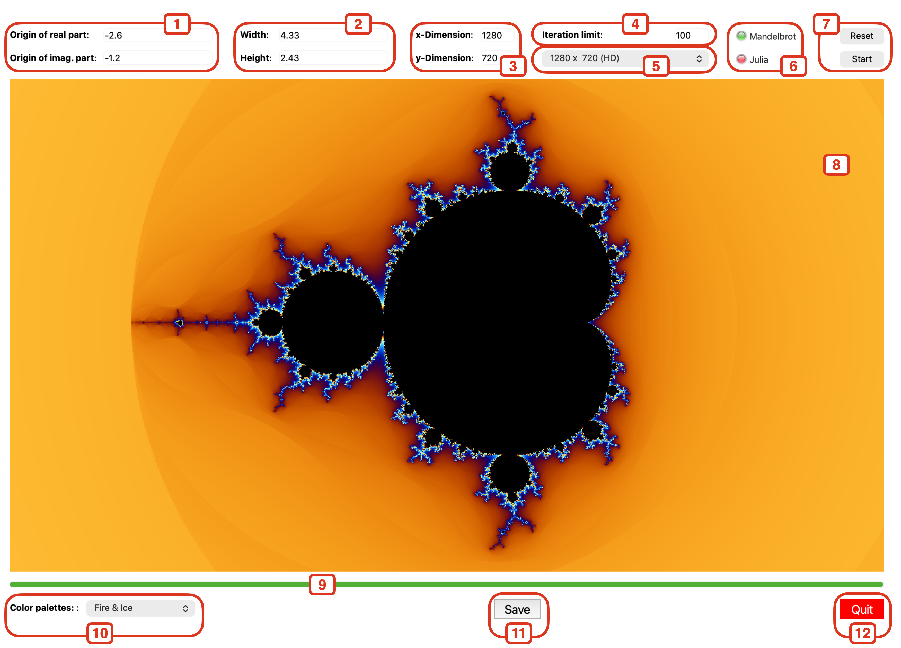
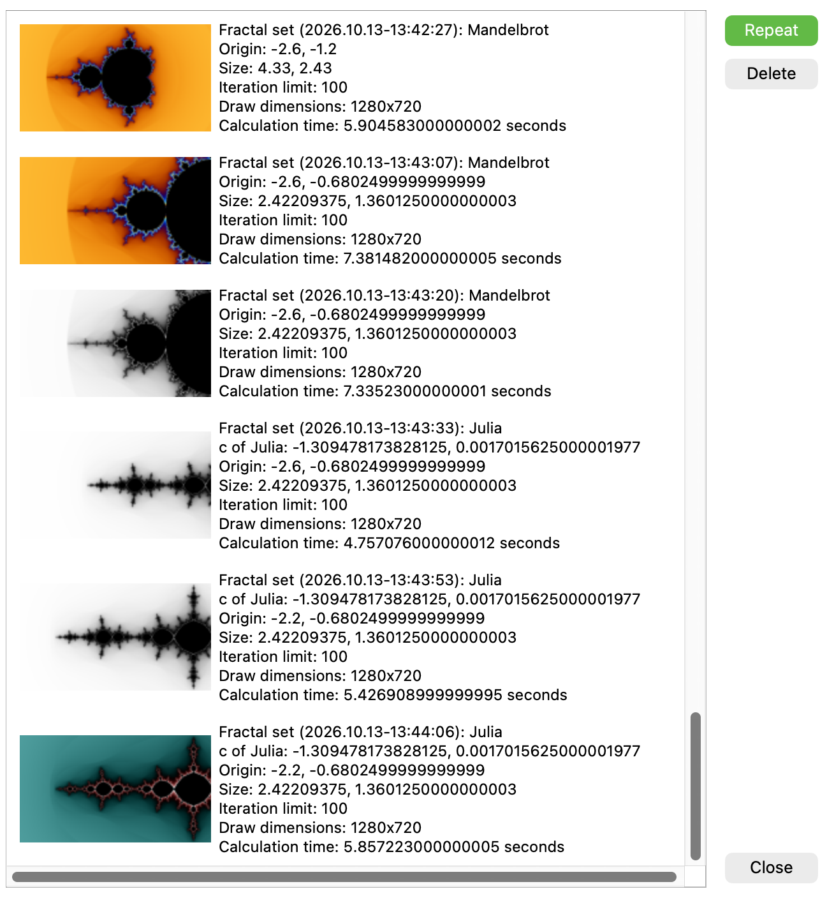
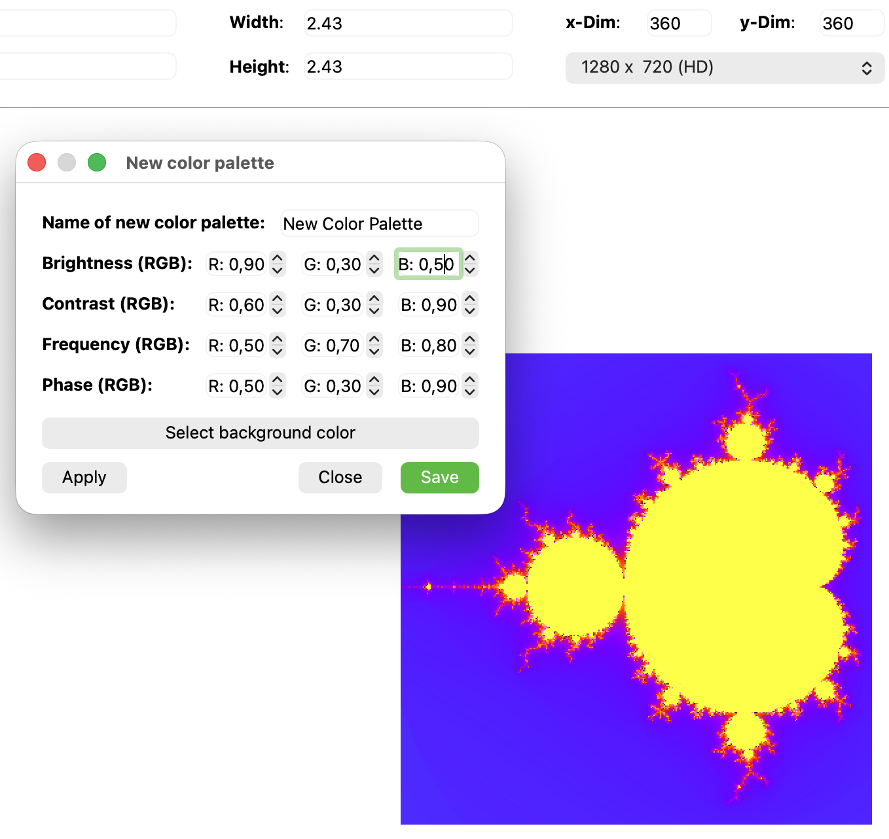
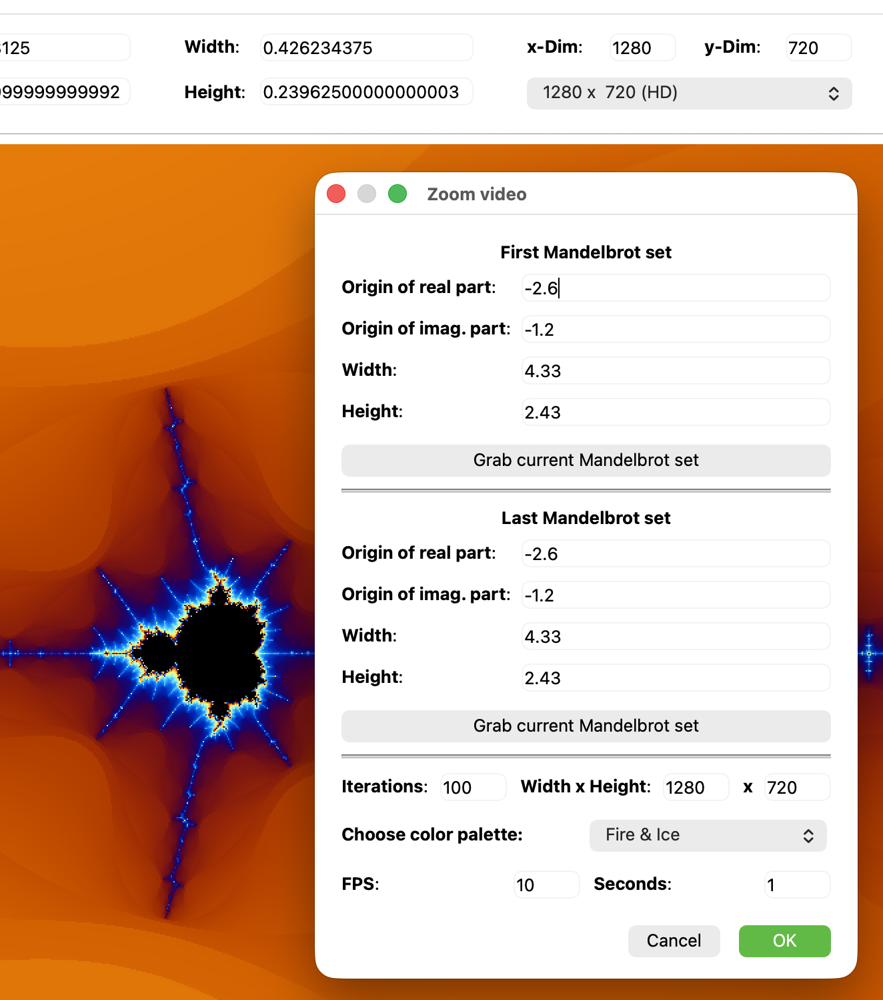
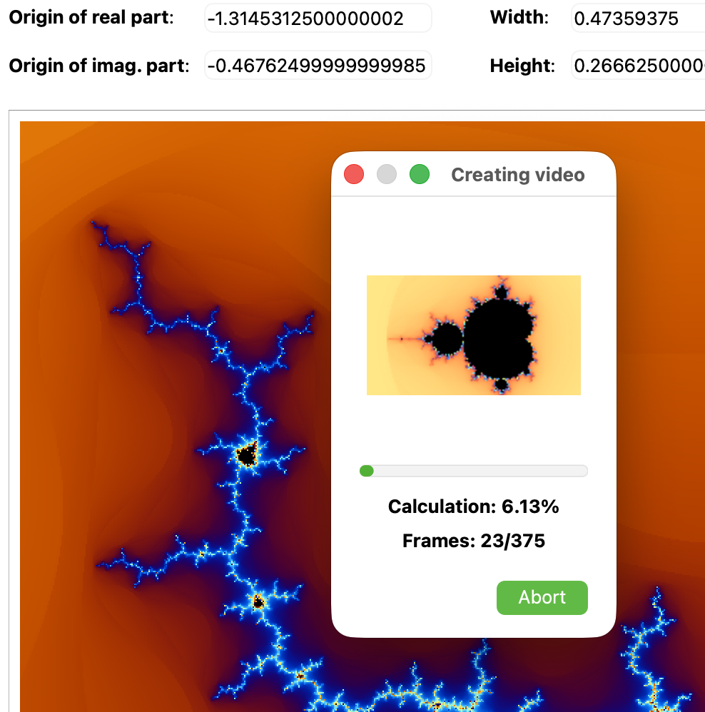

App to calculate fractals with Python & Qt (PySide6)
This app calculates fractal sets. It provides a few features like
The app is written in Python3 and PySide6.
This program is free software: you can redistribute it and/or modify it under the terms of the Apache 2.0 license as published.
In this section I describe the main window and its controls:


The history window shows all past calculations since starting the app the first time. The entries are sorted by time. You can delete single entries (at the moment one by one only) or repeat a specific calculation. The repeated one generates a new history entry!

With this window you may define a new color palette. At the top of the window you can provide a name for the new color palette. Pressing "Apply" shows a small Mandelbrot fractal set with new parameters as a preview. Pressing "Save" saves the new defined color palette by re-calculating a default Mandelbrot fractal set and adding it to the history list. Pressing "Close" closes the window.
For the theoretical background of this specific color palette calculation and the meaning of these parameters you may follow these two links (the mastermind of this is Inigo Quilez):
Additionally you are able to change the background color (default black). The background color ist the color of the origin fractal set!
Attention: User defined color palettes are stored in the history list only. If you delete the specific history item the user defined color palette will be lost!

To build a zoom video you have to provide the parameters of two Mandelbrot fractal sets: starting point and ending point. You may provide the data manually or grab it from the current Mandelbrot fractal set (preferred method). Additionally you may select the resolution (width and height), frames per second, and duration (seconds) of the video.
Of course you are able to select an existing color palette from a list.
At the end of the rendering process you may select the directory the video will be stored. It replaces an existing file! During calculation and rendering a progress window will be shown. The progress window shows the current set calculated/rendered as thumbnail. You may abort the whole video creation!

Attention:
You may switch from the Mandelbrot set to the Julia set by pressing [CTRL]+LMB (Windows/Linux) or [Cmd(⌘)]+LMB (Apple) on any point of the calculated set. Immediatly the calculation starts for the Julia set at this point. Of course you may zoom-in in the Julia set, too. The fractal indicator (see item 5 above) switches accordingly.
To stop a (long) running calculation you may press the key [ESC] or the RMB.
By pressing the LMB only you may draw an rectangle with the cursor (based on the current ratio, see item 3) which defines the area you want to zoom in. As soon as the calculation starts (immediately after release of the LMB), the new values (see item 1 and 2 above) will be adapted accordingly.
To iclude all necessary resources you need the Qt resource system (.qrc)
provided by PySide6 from Qt: "pyside6-rcc" (included already in the "pyside6"
package):
pyside6-rcc resources.qrc -o resources_rc.py
This file contains all "styles" as text and the images as binary code.
To build a standalone app you need "pyinstaller". You have to install it first:
pip install pyinstaller
In the next step you have to change in the directory where "main.py" is and execute the following line in a terminal:
macOS:\
pyinstaller --noconsole --onefile --icon=ui/Mandelbrot.icns main.py
Windows 11:\
pyinstaller --noconsole --onefile --icon=ui/Mandelbrot.ico main.py
These are the addional features for the future (arbitrary order):